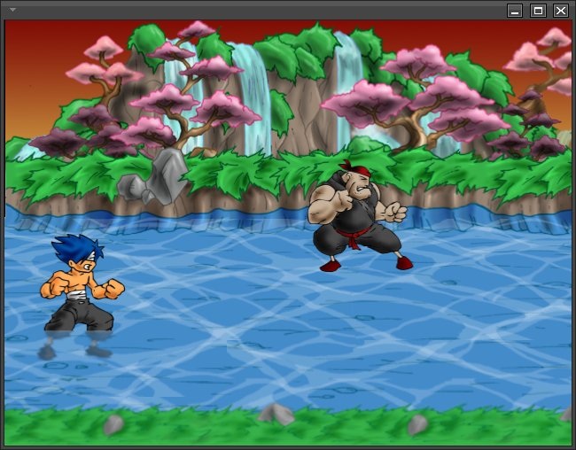
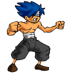
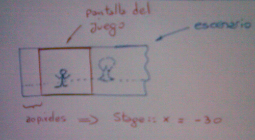
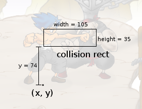

Shaolin's Blind Fury es un videojuego de acción estilo Final Fight, el jugador controla un personaje que puede golpear y saltar.
El jugador controla un estudiante de artes marciales. Su objetivo es condicirlo a través del escenario golpeando a todos los personajes que se crucen en su camino.
La pantalla de juego principal muestra los elementos mas imporantes para el jugador.

En la parte inferior se encuentran los personajes del juego, el shaolin se controla con un teclado o joystick, mientras que los enemigos tienen autonomía.
El usuario puede utilizar los direccionales del teclado o directamente un joystick. El sistema de controles se

Es el protagonista del juego.
La biblioteca multimedia utilizada principalmente es SDL, aunque mediante la constante HAVE_OPENGL se puede obtener aceleración de Hardware y soporte para la biblioteca OpenGL.
El programa se configura directamente desde los argumentos del programa. El objeto Director espera recibir una estructura de tipo Config por parte del programa principal.
Estas son algunas de las opciones que puede usar al iniciar el programa:
usage: ./sbfury [OPTIONS]
-fs enable fullscreen mode
-wide enable wide screen mode
El desplazamiento del escenario se realiza gracias a la cooperación de dos objetos, Stage y Group.
Al momento de crear el objeto Stage se le envía una referencia al objeto Shaolin, para que lo siga. Stage tiene una variable interna que intenta aproximar a la posición del sprite que sigue, esto permite simular un seguimiento similar al que realizaría una cámara de video.

IMPORTANTE: la imagen no está actualizada, la coordenada x tiene signo positivo siempre.
Otro objeto que coopera para realizar el desplazamiento es Group. Group es un contenedor que tiene a todos los objetos del juego: Shaolin, los enemigos, objetos del escenario.. etc. Para simular el desplazamiento, Group tiene un parámetro x en su método draw. Este parámetro x es un desplazamiento horizontal que aplicará a todos los objetos del juego. Por ejemplo, si se llama a draw con x=100, esto significará que la cámara está mirando el escenario unos 100 pixeles a la derecha, por lo tanto Group imprime todos los personajes del juego desplazados hacia la izquierda unos 100 pixeles.
La relación entre estos dos objetos se produce al momento de imprimir toda la pantalla. Stage le tiene que pasar su variable x a Group para que este imprima los personajes de manera consistente.
No hay otra relación para construir el desplazamiento, todos los objetos del juego desconocen la posición de la cámara. Para ellos la posición en pantalla es absoluta, por ejemplo, el shaolin podría tener la posición (2000, 300), como si la pantalla fuera realmente grande.
El objetivo del desplazamiento es mostrar al personaje dentro de pantalla de juego en todo momento.
El movimiento solo se inicia cuando el personaje llega a los bordes de la pantalla. Para esto se verifica si el modo de video es wide o no.
El objeto Control representa todas las entradas de teclado y joystick. El objetivo del módulo es proveer variables simples como 'up', 'down', 'jump', 'attack'.
Este módulo reside en el objeto Director, dado que se espera que todos los eventos de entrada se consulten ahí. Por ejemplo, el menú principal pude obtener una referencia a este objeto y comenzar a consultar su estado.
El protagonista del juego obtiene una referencia al objeto Control y consulta su estado desde cada uno de sus estados, como Walk o Stand.
Shaolin realiza distintas acciones o estados como caminar, saltar, o golpear.
Para implementar esto se ha optado por la solución que propone el patrón de comportamiento Strategy. Cada estado del personaje está representado por un objeto individual que hereda de State. Cada uno de estos objetos debe tener métodos constructor, update y on_animation_done. Estos métodos se llaman directamente desde la clase Shaolin.
Esto permite desacoplar el comportamiento en un momento dado del personaje que representa el movimiento.
La mayor relación entre estos objetos se da en el método Shaolin::update, donde se actualiza la animación y se delega todo comportamiento a la instancia de objeto State.
Note que esta estrategia es la misma que se utiliza para gestionar las escenas en el objeto Director. Ahí, Director intercambia escenas como si se tratara de estados individuales.
Cada estado generalmente muestra distintas animaciones, todas estas animaciones se construyen en el método 'load_animations' de la clase Shaolin. De forma que la carga de imágenes se haga una sola vez, y no en cada momento que se cambia de estado.
Cada sprite debe tener al menos una referencia a un objeto Animation para poder observarse. Este objeto Animation se tiene que vincular al sprite usando el método "set_animation", de forma que este método defina correctamente las coordenadas del sprite como los puntos de control (anchor_x, anchor_y).
El bucle principal de juego controla la velocidad constante del juego, y dentro de ese bucle se genera una variable para interpolar movimientos llamada 'dt'.
La unidad de esta variable representa una centena de segundo y se notifica a toda escena usando el método Scene::update.
Consulte mas detalles en el método Director::run.
La sombra del personaje es un sprite separado, que consulta al objeto Sprite cada vez que se actualiza. Este objeto Shadow no solo consulta las coordenadas de posición, además consulta la variable 'distance_to_floor' para representar la separación entre el personaje y el suelo reduciendo el tamaño del sprite que muesta. Esta última característica solo se observa si utiliza el soporte para opengl.
Cada personaje del juego tiene un rectángulo llamado ''collision_send'' que representa el area de ataque o emisión de golpe para otros personajes.
Por ejemplo, en la siguiente imagen se muestra el area de colisión para el personaje "shaolin":

Note que hay solo tres valores representativos para definir el area de colisión:
El resto de los valores se calculan a partir del personaje que emite la colisión. Por ejemplo, ''width'' se calcula desde el centro del sprite, por lo tanto si el personaje está mirando hacia la derecha el rectángulo sobresale en esa dirección (como se ve en la imagen). En cambio si el personaje está mirando hacia la izquiera el rectángulo sobresaldrá hacia la izquierda.
Por convensión quienes consultan la existencia de colisión son los objetos receptores, para esto hacen uso del método ''are_hit_me'' y le pasan como argumento una referencia a otro sprite.
Si este método retorna truees porque el personaje ha sido golpeado por el otro sprite y entran en colisión su area en pantalla con la zona de colisión del personaje emisor. (también se verifica si ambos estan cerca en el plano de profundidad 'z' con el método interno ''are_close_to_other_sprite_in_z_plane''.).